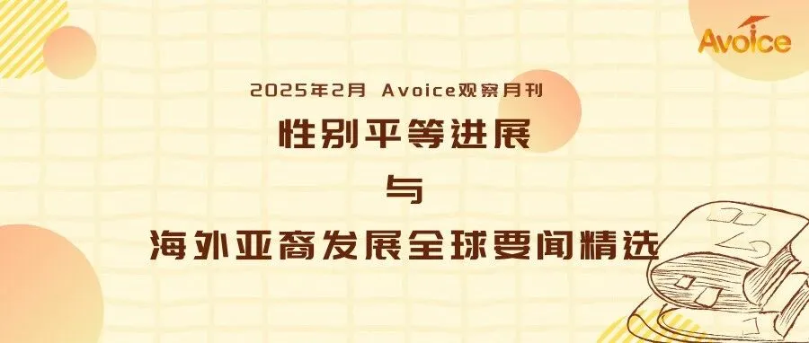
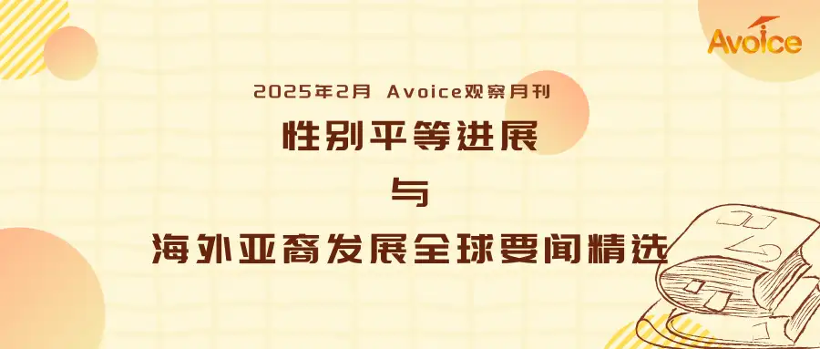

专栏引言：
二月，韩剧《善意的竞争》的爆火促进了大众对青春期女孩及女同性恋群体的认知与理解，迪士尼电影头脑特工队2也聚焦青春期女孩的情绪波动现象，加速了2024年荧幕性别平等的首次实现。加拿大网球协会近年在性别平等方面也取得重大进步。可是，网络上反南亚的极端主义言论也揭露了亚裔面临的暴力威胁。南加州暴力殴打亚裔女子的男子被判刑和新西兰网红餐厅开除涉种族歧视员工彰显了亚裔面对暴力威胁时取得公平公正的决心。Shirley Chong加入The World 100 Reputation Network和龚有柴在CCCC的首位中文导师身份彰显了亚裔在国际市场上持续加码的话语权。北卡罗莱纳大学教堂山分校成立的亚裔美国人中心进一步让亚裔群体被看见以及赋权。
目录
Table of Contents
一、性别平等
News on Gender Equality
爆款韩剧《善意的竞争》揭露东亚女孩身份困境
2024年迎来首次荧幕上的性别平等
从网球协会到性别平等
二、针对亚裔的暴力
Voice of Asian
对网络极端主义反南亚言论说不
南加州男子殴打亚裔女子被判刑
新西兰网红店歧视中国游客：涉事人员已开除
三、亚裔话语权
Crime against Asian Community
Shirley Chong加入 THE World 100 Reputation Network (W100)
龚有柴成为 Crypto Content Creator Campus 首位中文导师
北卡罗来纳大学教堂山分校成立亚裔美国人中心
01
性别平等
News
爆款韩剧《善意的竞争》
揭露东亚女孩身份困境
近日，韩国推出GL(Girl’s Love)剧集《善意的竞争》引发全网讨论，唤起东亚女性的强烈共鸣。此剧集探讨了东亚父权社会下的亲子关系，同性与异性的相处模式，阶级问题，与教育竞争压力对人的异化。
该剧集通过细腻的拍摄手法，诉说了升学考试给东亚学生带来的学业压力与精神问题。对青春期女孩的性欲的呈现，在视性为洪水猛兽的女性剧集中，促进了大众对女性性欲望的理解和正常化。其中女主角们暧昧关系的表现成为观众热议的焦点，在异性恋霸权的媒体世界，尽管男同性恋群体由于性别优势在性少数群体的讨论与呈现中占领高地，但是此次将焦点放在女同性恋无疑证明了大众对于此群体的高接受度与支持。
《善意的竞争》的爆火也标志着东亚社会对于女性题材呈现的一次重要变革。在保守大势的媒体呈现中，其对于敏感问题的开放呈现明显推动了社会对于青春期女孩以及女同性恋群体的承认，理解，与包容。
相关链接：
Nagasaki. (2025，March 4). 韩国双女主,出手即巅峰. 时尚COSMO.
News
2024年迎来首次荧幕上的性别平等
南加州大学Annenberg媒体学院的最新研究报告显示，2024年北美票房最高的电影中，女性主角比例首次达到性别平等。报告指出，2024年票房前100名电影中，有54部以女性为主角或联合主角，相较2023年的30部大幅增长。
2024年票房前五的电影中，有三部由女性主导，其中包括迪士尼/皮克斯的头脑特工队2，其在具备商业性的同时融入了青春期女孩情绪波动的元素，引起社会广泛讨论。然而，报告指出，2024年在种族方面电影行业并未取得进展。由少数族裔演员担任主角的电影数量较2023年有所下降。
AII创始人兼联合创作者史密斯博士表示，女性主角的成功并非市场突然觉醒，而是由于各方倡导、电影公司和DEI（多元、公平、包容）计划的持续推动。然而，少数族裔代表性的下降反映出电影行业在包容性叙事方面仍存在不足。这份报告不仅见证了女性在电影行业取得的重大进展，也揭示了行业在更广泛的包容性方面仍需努力，以更全面地反映观众的多元身份和故事需求。
相关链接：
Hazelton, J. On screen gender equality reached for first time in 2024, says research report. Screen.
https://www.screendaily.com/news/on-screen-gender-equality-reached-for-first-time-in-2024-says-research-report/5201827.article
News
从网球协会到性别平等
加拿大网球协会（Tennis Canada）与国家银行（National Bank）最近发布了GSE (Game. Set. Equity.) 影响报告，总结了该组织在五年性别平等战略实施两年来的进展。
该报告涵盖了关于提高女性参与度、推动女性领导力、确保平等话语权、促进商业发展以及打造包容和安全的环境的几大方面。主要成果包括U12项目中女性参与者比例大幅提升，董事会和高级管理层实现性别平衡，女性网球赛事观众人数创新高，并承诺到2027年实现男女选手奖金平等。此外，加拿大网球协会因其性别平等工作获得国际网球联合会（ITF）颁发的最高荣誉。
此报告不仅展示了网球协会在推动性别平等方面的持续努力，也彰显了体育领域在社会变革中的关键作用。通过这一长期战略，加拿大网球协会正积极打破障碍，为女性运动员创造更公平的环境，推动网球运动迈向更加包容与多元的未来。
相关链接：
Canada, T. (2025, March 5). Tennis Canada and National Bank publish Game. Set. Equity. Impact Report two years into long-term gender equity strategy. Tennis Canada.
https://www.tenniscanada.com/news/tennis-canada-and-national-bank-publish-game-set-equity-impact-report-two-years-into-long-term-gender-equity-strategy/
02
针对亚裔的暴力
News
对网络极端主义反南亚言论说不
据非营利组织 Stop AAPI Hate 发布的报告，自2024年美国大选后，极端主义网络空间中的反南亚仇恨言论急剧上升。报告显示，2025年1月的反亚裔网络攻击达到了自2022年8月开始监测以来的最高水平，其中反南亚言论的增长尤为显著，比2024年11月增加了75%。
这些仇恨言论主要围绕对印度裔群体的攻击，包括指责其“抢夺就业机会”和“威胁白人生活方式”。与此同时，针对亚洲人的暴力威胁大幅增加，反东亚言论也因对中国的政治担忧而上升。报告指出，在政府表达对高技能合法移民的支持后，部分极右翼人士在社交媒体上发起对亚裔的攻击和暴力威胁。尽管特朗普表达了对H-1B签证的支持，ta过去曾批评这一项目，称其“对本地工人非常不利”。
该报告表明，近年来美国社会对亚裔，尤其是南亚裔的网络仇恨言论持续增加，这一趋势与南亚裔政治人物的崛起密切相关。报告呼吁采取更多措施应对这一问题，以确保网络空间的安全和包容性。
相关链接：
Anti-South Asian online hate surged in extremist spaces after election, report says. (2025, February 20). NBC News.
https://www.nbcnews.com/news/asian-america/anti-south-asian-online-hate-surged-rcna193006
News
南加州男子殴打亚裔女子被判刑
2021年6月14日凌晨，南加州男子杰西·艾伦·林斯（Jesse Allen Lindsey）在库尔富市（Culver City）街头攻击了一名亚裔女性。ta不仅跟踪受害人，并大声辱骂种族歧视性言论，甚至在将ta殴打至脸朝下倒地后，继续言语侮辱。受害人收到严重伤害
2024年12月，林斯对仇恨犯罪指控认罪，并被洛杉矶联邦法院判处51个月监禁。案件发生后，林斯因害怕惩罚逃离加州，最终在州监狱内被执法人员找到。ta用刻板印象描述受害者，并谎称自己是出于自卫。但是事实表明，受害人身材瘦小，而林斯是一名魁梧强壮的男性，攻击行为毫无正当理由。
此案件不仅凸显了美国社会持续存在的仇恨犯罪问题，也反映出亚裔群体在公共安全方面面临的挑战。林斯的定罪和判刑，向社会传递了一个明确信号——种族仇恨犯罪将受到严惩。
相关链接：
南加种族歧视者殴打亚裔女被判四年!ta狡辩:ta会李连杰功夫. (2025，March 5). 洛杉矶e生活.
News
新西兰网红店歧视中国游客：
涉事人员已开除
2月17日，一名中国台湾的游客在新西兰旅游时，在皇后镇的Fergburger汉堡店收到了一张含有种族歧视语言的小票。事件引发广泛关注，不少网友对店员的不当行为表达愤怒和批评。
2月20日，涉事汉堡店向中国驻克赖斯特彻奇总领馆道歉，并在社交媒体上承诺展开调查并采取整改措施。店方表示，已对事件进行全面审查，向当事顾客正式致歉，并加强员工对于尊重不同文化的培训。以示对事件严重性的重视，涉事员工已被开除。
中国驻克赖斯特彻奇总领馆要求店方杜绝类似事件的再次发生。这一事件不仅反映出海外餐饮业在文化敏感性方面的不足，也提醒商家应加强对员工的培训，营造更加包容和尊重的消费环境。
相关链接：
中国游客在新西兰一网红店用餐,收到含有种族歧视语言的小票!店方道歉:涉事员工已开除!中领馆发声. (2025，Feb 20). 红星新闻.
03
亚裔话语权
News
Shirley Chong加入 THE World 100 Reputation Network (W100)
香港城市大学传播与机构研究主任 Shirley Chong 近日正式加入 THE World 100 Reputation Network（W100），成为该全球大学声誉管理网络的委员会成员和亚洲代表。这一任命标志着亚洲高等教育对全球的发展贡献力量。
Chong 表示，加入 W100 委员会的决定源于香港城市大学的全球化发展战略。ta希望通过这一平台，推动亚洲高校在全球范围内获得更广泛的认可，并分享香港城市大学在品牌塑造方面的经验。香港城市大学近年来在全球大学排名中表现优异，并被 Times Higher Education 评为 2024 年全球最具国际化的大学。
未来，香港城市大学计划与 W100 合作，这一合作不仅将促进亚洲高校的国际化进程，也将提升其在全球高等教育领域的影响力。Chong 的加入推动了亚洲高校在全球舞台上的认知度，为国际高等教育的声誉管理提供新的视角和战略。
相关链接：
Welcoming Shirley Chong: City University of Hong Kong’s voice in reputation building on the global stage. (2025, February 17). Times Higher Education (THE).
https://www.timeshighereducation.com/hub/consultancy/p/welcoming-shirley-chong-city-university-hong-kongs-voice-reputation-building
News
龚有柴成为 Crypto Content Creator Campus 首位中文导师
2025年2月14日，Crypto Content Creator Campus（CCCC）宣布龚有柴（Gong Youchai）加入其KOL 孵化学校，成为该项目的首位中文授课导师。这一举措反映了中文社区在加密货币领域的影响力日益增强，同时也彰显了 CCCC 在全球化、多元化教育方面的承诺。
CCCC 负责人 Phoebe Peng 表示，龚有柴的加入对于 KOL 孵化学校的参与者来说是一项巨大助力，ta的市场洞察力以及与中文社区的紧密联系，将极大提升项目的影响力。龚有柴本人也表达了对这一角色的期待，ta认为教育与社区的力量能够帮助更多内容创作者在加密货币世界中找到属于自己的道路。
此次任命不仅加强了 CCCC 在全球范围内的影响力，也为中文社区在 Web3 和加密货币领域的内容创作提供了更多成长机会。
相关链接：
Voice. (2025, February 14). Crypto Content Creator Campus Welcomes Gong Youchai as First Chinese-Speaking Tutor to its KOL Incubation. Weekly Voice.
https://weeklyvoice.com/crypto-content-creator-campus-welcomes-gong-youchai-as-first-chinese-speaking-tutor-to-its-kol-incubation-school/
News
北卡罗来纳大学教堂山分校
成立亚裔美国人中心
北卡罗来纳大学教堂山分校（UNC-Chapel Hill）近日正式成立亚裔美国人中心（Asian American Center, AAC），该中心致力于促进对亚裔文化和历史的了解，并为校园内的亚裔群体提供支持。
中心由英语与比较文学系副教授 Heidi Kim 担任主任，并设定500万美元的募款目标，以确保长期运营。该项目得到学生和校友的大力推动与资金支持。AAC 计划举办一系列讨论会，探讨亚裔身份认同、族裔关系及历史议题。Kim 表示，亚裔是北卡州增长最快的少数族裔群体，而该校 17% 的学生为亚裔或亚裔美国人，成立专门机构具有重要意义。ta希望未来中心能设立实体办公地点，为亚裔学生和社区提供一个归属感更强的空间。
这一中心的成立不仅填补了 UNC 校园长期以来的空白，也象征着亚裔群体在美国高校中逐步获得更多关注和支持。
相关链接：
Well, B. S. H. (2020, September 10). Asian American Center comes to Carolina, virtually | UNC-Chapel Hill. The University of North Carolina at Chapel Hill.
https://www.unc.edu/discover/asian-american-center-comes-to-carolina-virtually/
* 注：本文所收录的信息仅用于分享交流，不代表Avoice的立场和观点
撰稿｜董雨昕
排版/封面｜池一诺